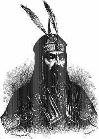
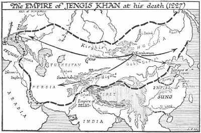

|
|
21 JENGIS KHAN ± 1162-1227
Jengis Khan,
penakluk Mongol terbesar, dilahirkan kira-kira tahun 1162.
Ayahnya seorang kepala suku kecil, menamakan anaknya Temujin
sesudah dia mengalahkan kepala suku lain. Tatkala Temujin
berumur sembilan tahun, ayahnya terbunuh oleh suku lawannya,
dan sesudah itu anggota familinya yang kebetulan masih hidup
berada dalam cengkeraman ketakutan dan keterasingan. Ini
betul-betul suatu pemula dari kehidupan yang getir, dan bagi
Temujin lebih-lebih lagi sebelum ada perubahan yang lebih
baik untuk dirinya. Tatkala dia sudah menginjak usia muda
remaja, dia tertawan dalam suatu pertempuran melawan suku
lawannya.
Untuk mencegah dia bisa lolos, sebuah gelang bambu
digantungkan di batang lehernya. Dari keadaan yang tak
tampak jalan lolos dalam tahanan kelompok buta huruf yang
primitif, dari negeri yang kering kerontang papa sengsara,
Temujin mampu bangkit menjadi manusia yang terkuat di
dunia.
Kebangkitannya bermula dari usahanya meloloskan diri dari
tahanan lawannya. Kemudian dia bergabung dengan Toghril,
teman akrab mendiang ayahnya, seorang kepala suku yang punya
kaitan hubungan di daerah itu. Tahun-tahun berikutnya yang
penuh dengan baku hantam antar suku, Temujin setapak demi
setapak berjuang keras mencapai puncak.
Suku-suku Mongol lama terkenal penunggang-penunggang kuda
yang mahir dan pendekar-pendekar yang keras tak kenal ampun.
Sepanjang sejarah mereka tak henti-hentinya menggempur Cina
bagian utara. Tetapi, sebelum Temujin muncul, antar suku
Mongol suka berhantam sesamanya menyia-nyiakan energi.
Dengan kelihaian menggabungkan sikap keberanian, diplomasi,
kekerasan dan kesanggupan mengorganisir, Temujin berhasil
menyatukan semua suku-suku dibawah kepemimpinan Temujin, dan
pada tahun 1206 sebuah permusyawaratan besar antar suku-suku
Mongol memberi julukan Temujin "Jengis Khan" yang berarti
"Kaisar semesta." Kekuatan militer Jengis Khan yang
menakutkan yang digalangnya menujukan ujung tombaknya ke
negeri-negeri yang berdampingan. Mula-mula dia melabrak Hsi
Hsia di timur laut Cina dan Kekaisaran Chin di utara Cina.
Tatkala pertempuran berlangsung percekcokan timbul antara
Jengis Khan dan Khwarezm Shah Muhammad yang memerintah
kerajaan yang lumayan besarnya di Persia dan Asia Tengah. Di
tahun 1219 Jengis Khan menggerakkan pasukannya melabrak
Khwarezm Shah. Asia Tengah dan Persia diambil alih dan
kerajaan Khwarezm Shah Muhammad dihancurluluhkan. Bersamaan
dengan itu sebagian pasukan Mongol menyerang Rusia, Jengis
Khan pribadi memimpin tentara menyerbu Afganistan dan India
bagian utara. Dia kembali ke Mongolia tahun 1225 dan wafat
di sana tahun 1227.
Sesaat sebelum Jengis Khan menghembuskan nafas terakhir,
dia minta agar putera ketiganya, Ogadai, ditetapkan jadi
penggantinya. Ini merupakan pilihan bijaksana karena Ogadai
menjadi seorang jendral brilian atas hasil usahanya sendiri.
Di bawah kepemimpinannya, pasukan Mongol meneruskan
penyerbuannya di Cina, sepenuhnya menguasai Rusia, dan
menyerbu maju menuju Eropa. Di tahun 1241 gabungan tentara
Polandia, Jerman, Hongaria sepenuhnya dipukul oleh
orang-orang Mongol yang maju pesat menuju Budapest. Tetapi,
tahun itu Ogadai meninggal dunia dan pasukan Mongol mundur
dari Eropa dan tak pernah kembali lagi.
Ada masa lowong yang kentara tatkala para kepala suku
Mongol saling adu alasan mengenai soal pengganti pimpinan.
Tetapi, sementara itu di bawah dua Khan berikutnya (Mangu
Khan dan Kublai Khan, keduanya cucu Jengis Khan) orang-orang
Mongol meneruskan maju mendesak terus di Asia. Tahun 1279
orang-orang Mongol sudah menguasai sebuah empirium yang
terluas dalam sejarah. Penguasaan daerahnya meliputi Cina,
Rusia, Asia Tengah, juga Persia dan Asia Tenggara.
Tentaranya melakukan gerakan maju yang penuh keberhasilan
menambah daerah yang membentang mulai dari Polandia hingga
belahan utara India, dan kekuasaan Kublai Khan diakhiri di
Korea, Tibet, dan beberapa bagian Asia Tenggara.
Suatu empirium yang begini luas daerahnya dengan
sendirinya sukar diatasi lewat sistem transportasi yang
masih primitif. Akibatnya adalah musykil memelihara keutuhan
daerah kekuasaan, sehingga pada akhirnya empirium itu
terpecah belah. Tetapi, kekuasaan Mongol masih mampu
bertahan bertahun-tahun. Orang Mongol baru terhalau dari
sebagian besar Cina tahun 1368. Malahan, kekuasaan mereka
atas daerah Rusia berlangsung lebih lama. "Pengelana Emas,"
begitulah julukan yang lazim diberikan kepada kerajaan cucu
Jengis Khan bernama Batu didirikan di Rusia berlangsung
hingga abad ke-16 dan Khamate dari Crimea bertahan hingga
tahun 1783. Cicit-cicit lain Jengis Khan mendirikan
dinasti-dinasti yang menguasai Asia Tengah dan Persia. Kedua
daerah ini ditundukkan di abad ke-14 oleh Timurleng
(Tamerlane), juga berdarah Mongol dan mengklaim diri
keturunan Jengtis. Dinasti Tamerlane berakhir di abad ke-15.
Tetapi meski ini berakhir bukanlah berarti
penaklukan-penaklukan dan penguasaan Mongol sudah stop.
Cicit Tamerlane bernama Baber menyerbu dan menduduki India
dan mendirikan dinasti Mogul (Mongol). Penguasa-penguasa
Mogul, yang menguasai hampir seluruh India tetap menggenggam
tampuk kekuasaan hingga pertengahan abad ke-18.
Dalam perjalanan sejarah telah dapat dipastikan
penguasaan oleh manusia-manusia --katakanlah manusia
"sinting" kalau mau-- yang telah mampu menaklukkan dunia dan
berhasil menguasainya. Yang paling menonjol dari para
"Megalomaniak" ini adalah Alexander Yang Agung, Jengis Khan,
Napoleon Bonaparte dan Hitler. Apa sebab dan alasan apa
menempatkan keempat orang ini dalam daftar urutan atas dalam
daftar buku ini? Bukankah yang namanya ide lebih bermakna
ketimbang bala tentara? Saya tentu saja sepakat bahwa dalam
jangka panjang pena jauh punya kekuatan ketimbang pedang.
Bahkan juga dalam ukuran jangka pendek. Masing-masing dari
keempat tokoh di atas menguasai begitu luas daerah dan
begitu banyak penduduk dan menanamkan pengaruh begitu besar
kepada orang-orang sejamannya dan mereka tidaklah bisa
disebut dan disisihkan semacam menghadapi bandit biasa.

Penaklukan Mongol
Apa sebab saya berkesimpulan Jengis Khan lebih penting
dari ketiga tokoh lainnya? Sebagian --tentu saja-- karena
pengaruhnya menyebar ke daerah yang lebih luas dari pengaruh
lainnya. Dan yang lebih penting lagi, pengaruhnya
berlangsung dalam jangka waktu yang lebih lama. Napoleon dan
Hitler terkalahkan tatkala keduanya masih hidup dan
penaklukannya berjangka pendek. Meski pasukan Alexander Yang
Agung tak terkalahkan pada saat ia tutup usia, dia tak
pernah menunjuk penggantinya dan sesudah kematiannya
empiriumnya segera berantakan. Tetapi, Jengis Khan mampu
mengorganisir daerah taklukannya begitu cermat dan rapinya,
dan baik anak-anak maupun cucu-cucunya semuanya merupakan
pewaris yang teguh. Orang-orang Mongol meneruskan penguasaan
atas daerah begitu luas di Asia berabad-abad sesudah
kematian Jengis Khan.
Salah satu akibat tak langsung penaklukan oleh Jengis
Khan menyimpan makna tersendiri. Penaklukan Mongol yang
berbarengan dengan penyatuan sebagian besar Asia lebih
mengembangkan rute perdagangan di kawasan itu daripada
keadaan sebelumnya. Dan sekaligus mendorong arus perdagangan
antara Cina dan Eropa. Pedagang-pedagang Eropa seperti Marco
Polo dengan demikian dapat melakukan perjalanan ke Cina dan
kembali membawa pelbagai rupa kisah tentang betapa kaya dan
makmurnya Cina. Peningkatan kegiatan ekonomis dengan daerah
Timur ini dan kenaikan minat di Cina sendiri salah satu
sebab yang menggoda orang-orang Eropa untuk berdatangan
mencari rejeki dan mengeksploitir Timur.
Salah satu kenyataan penting: andaikata Christoper
Colombus, Simon Bolivar dan Thomas Edison tak pernah
dilahirkan ibu mereka ke dunia, dapat dipastikan ada orang
lain yang menemukan benua Amerika, yang membebaskan Amerika
Latin, yang menemukan cahaya listrik. Tetapi, jika Jengis
Khan tak pernah dilahirkan emaknya, tak bakalan dunia
menyaksikan penaklukan begitu dahsyat dan besar-besaran oleh
bangsa Mongol. Suku-suku Mongol tak pernah bisa bersatu
sebelum abad ke-13 dan mereka sekarang tak bisa bersatu
lagi. Jengis Khan dengan demikian tak syak lagi merupakan
penggerak utama dari perbuatan besar itu dalam sejarah
manusia.
|